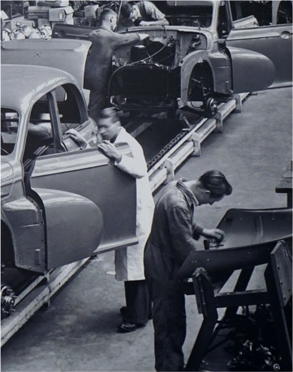
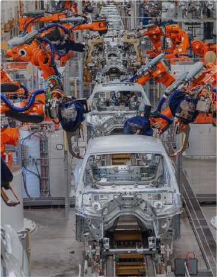
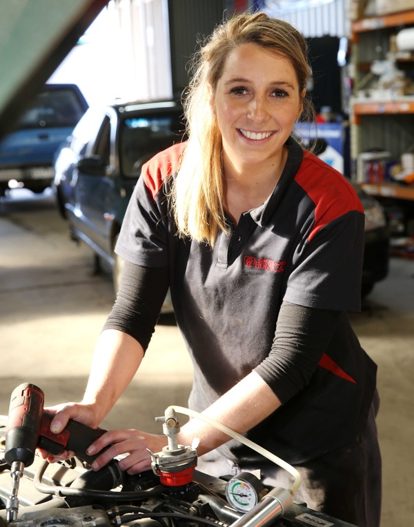
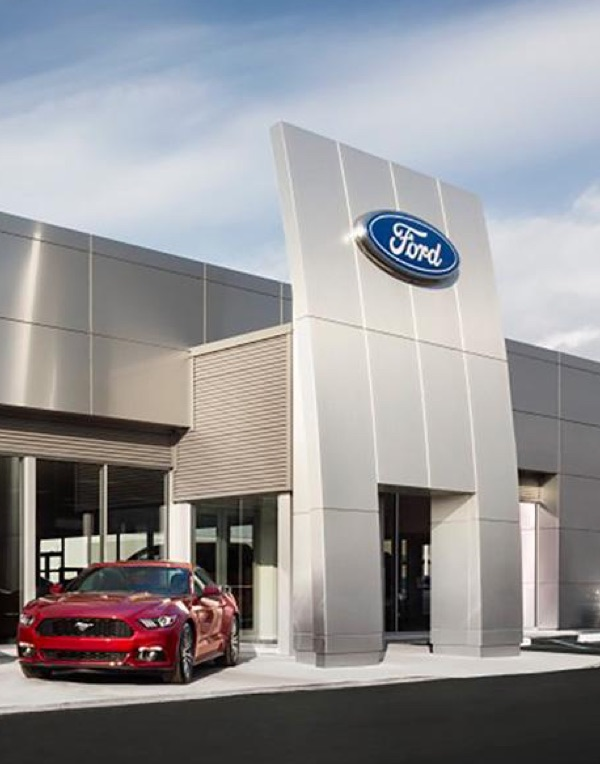

CYTK was founded on the principle that humans and technology must not be mutually exclusive. Humans and technology must work together, enabling far greater impact than they ever could in isolation.


Be the change
Oxford University estimates that 47% of jobs in the US are “at risk” of being automated in the next 20 years.
A tech’s best friend
CYTK’s core features aim to make tech’s lives easier – saving time and money in the process.
Hands-free operation
A combination of iOS and Android smart phones along with Bluetooth IoT devices enables technicians to work hands free.
Smart Search
CYTK enables universal search on any part or procedure without the technician having to set down their tools or move from the bay.
Smart Workflow
CYTK provides a suite of AI powered mobile apps that helps technicians work through their workflows faster, with higher quality and an increase in job satisfaction. Workflow examples include: Repair Processes, Vehicle Inspections and Pin-Point Tests.
Natural language processing
The CYTK NLU engine has micro control over the converstation flow. Our NLU engine “harmonizes” between technician’s intent and the task itself seamlessly and via an active learning environment.
Value proposition
CYTK provides a range of benefits for technicans, shops and OEM’s.
Cause
-
Save time
Vehicle information, specifications, how-to guides: presented instantly and contextually to the task at hand.
-
Expand human capability
Seamless, real-time access to key vehicle information and procedures will improve the capability of technicians.
-
Improve accuracy
Capturing data in the moment, no more guessing about misspellings or made-up acronyms.
-
Drive consistency
Consistent process execution with greater accuracy.
Effect
-
Drive operational efficiency
Improve individual and overall shop productivity and efficiency.
-
Knowledge
Expanded human capability will enable continuous learning and knowledge.
-
Quality
Improved data accuracy and consistent process execution will drive overall shop quality.
Benefit
-
Return on investment
Quality execution, reduced cost, improved output and increased revenue.
-
Employee satisfaction
Making the human interaction with technology more seamless will expand capability and improve satisfaction within the work environment.
-
Customer satisfaction & loyalty
Consistent process execution with high quality will drive overall customer satisfaction and owner loyalty.


A vast market
The US auto aftermarket is valued at $273.4B, equaling 1.5–2% of the US GDP. The US auto dealership market is valued at $33B. A handful of companies control both marketplaces.
Voice of
customer
67% of technicians take over 3 minutes to find required information on each repair. 35% take over 5 minutes per repair.
60% of technicians are using their cell phones to look up vehicle repair information.
61% state that voice is imperative when their hands and vision are occupied.
40% of technicians are searching and viewing YouTube vidoes for vehicle repair.
Who’s involved?
Darr Aley
Mr. Aley worked with Jeff Bezos and Elon Musk in areas that include mergers and acquisitions, business development, strategy, and operations. As an entrepreneur he has started, invested, and/or joined companies in every stage of development (napkin to IPO) and seen them through to billions of dollars in exit value.

Kirk Bradley
Mr. Bradley is currently an Executive Technical Advisor at Oracle Corporation (NASDAQ: ORCL). He is one of the original technologists and among the longest serving employees of Oracle. In conjunction with investing in CYTK, Mr. Bradley will also be making significant contributions as a Technology Advisor.